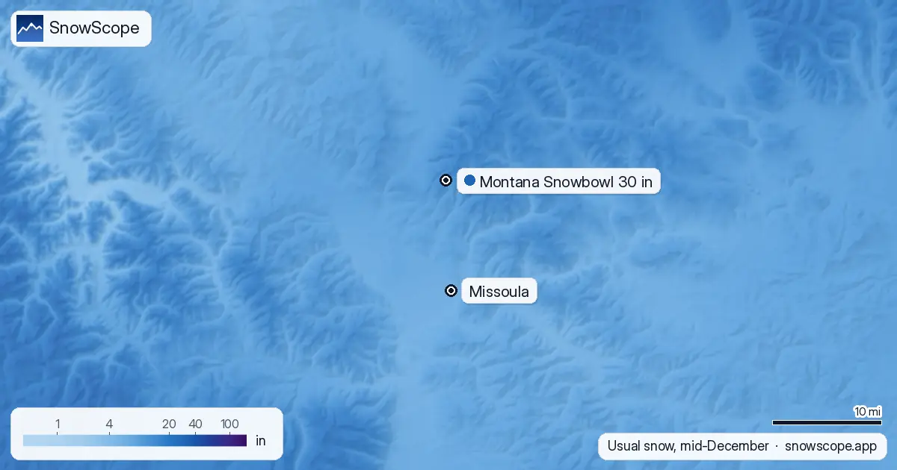

Montana Snowbowl im Dezember: Missoulas 78-$-Wochentagsberg
Montana Snowbowl ist Missoulas lokaler Berg: steil, schlicht und ehrlich bepreist, mit einer 2026/27-Liste von 78 $ unter der Woche und 85 $ am Wochenende. Laut unserer Schneehistorie sind Mitte und Gipfel des Berges meist bis Mitte Dezember bereit. Die Basis ist eine andere Geschichte.
Die Live-Schneeprognose für Montana Snowbowl in der SnowScope-AppSchneehöhen, Pulverschnee-Alarme und 3D-Karte, gratis.Ein Berg für eine Uni-Stadt
Snowbowl liegt eine kurze Fahrt von Missoula entfernt, mit 6 Liften und rund 27 mi (43 km) Pisten auf unserer Karte, von etwa 4.990 ft (1.522 m) bis 7.530 ft (2.296 m). Es gibt kein Resort-Dorf; Einheimische kommen hoch, fahren hart und gehen heim.

Die Preise
Die Preistabelle für 2026/27 ist kurz. Ein voller Erwachsenentag kostet 78 $ unter der Woche und 85 $ am Wochenende und an Feiertagen. Das Nachmittagsticket, ab 12:30 Uhr, kostet 72 $ unter der Woche und 77 $ am Wochenende und an Feiertagen.
Snowbowl ist auch auf dem Indy Pass. Der Indy Base Pass kostet 419 $ und der Indy+ Pass 469 $, jeweils mit zwei Tagen in jedem Mitgliedsgebiet.

Warum die Basis hinterherhinkt
Der untere Teil von Snowbowl liegt tief für die nördlichen Rockies, und das zeigt sich. An einem typischen 15. Dezember hat die Basis 16 in (40 cm), mit nur 28 % der Winter über 20 in (50 cm). Die Bergmitte, etwa 6.260 ft (1.909 m), hat 30 in (76 cm), mit 83 % der Winter über 20 in, und der Gipfel 37 in (93 cm), mit 91 %.
Woche für Woche liegt der Anteil guter Schneewochen auf der Bergmitte bei 67 % in der ersten Dezemberwoche, 83 % in der zweiten und dritten, und 91 % in der Weihnachtswoche. Ein magerer Dezember hatte am 15. trotzdem noch 18 in (45 cm) auf der Bergmitte. Dauerhafter Schnee erreicht sie meist in der zweiten Oktoberhälfte.
Snowbowl, Bridger Bowl oder Lookout Pass?
Bridger Bowl bei Bozeman verlangt 86 $ online und 99 $ am Schalter, und seine Bergmitte hatte 20 in (51 cm) an einem typischen 15. Dezember, mit nur der Hälfte der Winter über 20 in. Lookout Pass, westlich an der I-90, kostet 63 $ unter der Woche mit Reservierung und hatte 30 in (75 cm).
Anfang Dezember sind Snowbowl und Lookout die besseren Wetten der drei beim Schnee, und Snowbowl hat das steilere Gelände.
Wenn der Dezember mager ist
Die ersten 15 Winter unserer Aufzeichnung hatten 35 in (88 cm) auf der Bergmitte an einem typischen 15. Dezember, und jeder einzelne lag über 20 in; die letzten 15 hatten 28 in (71 cm) und 80 %. Der letzte Winter startete gut, mit 30 in (76 cm) an diesem Datum. Kommt ein magerer Dezember, bleiben Sie auf den oberen präparierten Pisten und behalten Sie die Schneekarte für den nächsten Sturm im Blick.
Tipps für Skifahrer
- Fahren Sie unter der Woche: Der volle Tag kostet 78 $, das Nachmittagsticket 72 $.
- Die Zufahrtsstraße ist steil und eng nahe dem Gipfel: Winterreifen oder Ketten sind Pflicht.
- Erwarten Sie Anfang Dezember dünne Deckung unten; fahren Sie erst hoch, bevor Sie den Tag beurteilen.
- Steiles Gelände und früher Schnee: Lawinenlagebericht prüfen, bevor Sie das Skigebiet verlassen.
Quellen und Nachweise
- Montana Snowbowl, lift tickets 2026/27 (official) montanasnowbowl.com/sbblog/lift-tickets/
- Indy Pass, shop 2026-27 (official) www.indyskipass.com/shop
- Bridger Bowl, lift ticket pricing 2026/27 (official) bridgerbowl.com/tickets-passes/lift-tickets
- Lookout Pass, lift tickets 2026-2027 (official) skilookout.com/lift-tickets/
- OpenSkiMap (mapped lifts and runs) openskimap.org/
- avalanche.org, US avalanche centers and forecasts avalanche.org/
Zu diesen Zahlen
Schneewerte: SnowScope-Schneehistorie, 46 vergangene Winter (1980-81 bis 2025-26) auf den angegebenen Höhen (Tal, Mitte, Gipfel), eine höhenkorrigierte Rekonstruktion des früheren Schnees für eine Fläche (auf Basis von ERA5-Land; Snow_Hydro 1 km für Marokko), keine Meldungen des Skigebiets. Aktueller Schnee: die SnowScope-Schneekarte. Lifte, Pisten und Höhen: OpenSkiMap-Kartierung. Preise: die unten genannten offiziellen Seiten, gelesen am 13. November 2026; dynamische Preise ändern sich mit Datum und Nachfrage.
Offizielle Lawinenlageberichte: Gallatin National Forest Avalanche Center
Diesen Bericht zitieren
Für Forschung, Lehre oder Presse: Zahlen und Grafiken sind unter CC BY 4.0 mit dieser Quellenangabe frei nutzbar.
SnowScope (2026), Montana Snowbowl im Dezember: Missoulas 78-$-Wochentagsberg, https://snowscope.app/blog/de/2026/11/montana-snowbowl-missoula-december-cheap-skiing.html, abgerufen am 2026-11-14
SnowScope (Atlas Labs). (2026, November 14). Montana Snowbowl im Dezember: Missoulas 78-$-Wochentagsberg. SnowScope snow reports. https://snowscope.app/blog/de/2026/11/montana-snowbowl-missoula-december-cheap-skiing.html
BibTeX
@misc{snowscope2026montanasnowbowlmissoulad,
author = {{SnowScope (Atlas Labs)}},
title = {Montana Snowbowl im Dezember: Missoulas 78-$-Wochentagsberg},
year = {2026},
month = nov,
howpublished = {\url{https://snowscope.app/blog/de/2026/11/montana-snowbowl-missoula-december-cheap-skiing.html}},
note = {Published 2026-11-15 09:34 UTC; accessed 2026-11-14}
}· CC BY 4.0 · Methoden, Daten und Werkzeuge →
Montana Snowbowl: Schnee und Temperatur nach Höhe, dieser Winter vs letzter (Werkzeuge) →
Montana Snowbowl folgen
Gratis: eine Nachricht, wenn Neuschnee kommt, und jeden Morgen die Vorhersage.
Weitere Schneeberichte

Ein Sturm am 4. November brachte 8 bis 13 inches Neuschnee an fünf hoch gelegenen Stationen in Colorado nahe Aspen. Fünf Tage später war die Hälfte weg. Was das für Powder-Tage bedeutet.

Die weiße Fläche auf der Karte sank von 49.467 sq mi (128.120 km²) (11. November) auf heute 49.050 sq mi (127.040 km²), und die Prognose sagt …

Von jetzt bis zum 16. November erwarten wir 13 in (34 cm) in Bear Valley, 13 in (34 cm) in Dodge Ridge und 13 in (33 cm) in Badger Pass. Ein Wort zu …